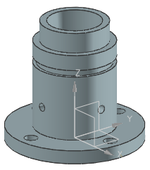
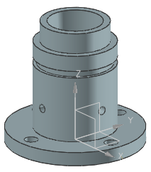

打开部件并查看模型历史记录
-
打开 des14_feature_replay_1。

-
如果未显示部件导航器，点击资源条上的部件导航器
 选项卡。
选项卡。 -
在部件导航器中，右击名称列标题，确保已选择时间戳记顺序。
特征按顺序排列在部件导航器中模型历史记录节点下方。
打开 des14_feature_replay_1。

如果未显示部件导航器，点击资源条上的部件导航器  选项卡。
选项卡。
在部件导航器中，右击名称列标题，确保已选择时间戳记顺序。
特征按顺序排列在部件导航器中模型历史记录节点下方。